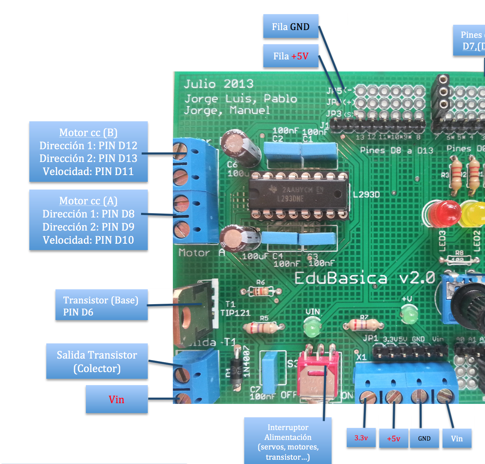

Accionamiento con Edubásica
Edubásica es una tarjeta diseñada para facilitar la tarea en el aula. Elimina gran parte de cableado y conexiones en la placa de pruebas lo que evita muchos errores en las prácticas.
En esta placa disponemos de las dos opciones vistas anteriormente. Edubásica lleva montados, entre otros componentes, un circuito integrado L293 y un transistor. Por lo tanto podemos activar motores usando ambas opciones, aunque lo recomendable es utilizar el L293 que permite el cambio de sentido de giro y regular la velocidad actuando con una señal PWM sobre los dos pines de habilitación (dependiendo de la hoja de datos viene como ENABLE o CHIP INHIBIT) del circuito L293. Los pines de Arduino que pueden regular la velocidad por PWM correspondientes a esas patillas de habilitación serán: D10 para el motor A y D11 para el motor B.
Para hacer funcionar dos motores DC con Edubásica sólo tenemos que conectar en las clemas indicadas (serigrafiados en la placa como Motor A y Motor B) los dos cables de cada motor. Según se observa en la imagen, tenemos 4 conexiones para los dos motores. Desde Arduino y con la tabla de verdad del CI L293 indicada en la sección anterior, podemos regular el sentido de giro y velocidad de cada motor.
Edubásica lleva un interruptor que permite tomar el voltaje de la salida Vin de Arduino (alimentación externa), necesaria para dar la corriente suficiente para accionar los motores. Cuando el piloto Vin está encendido significa que la alimentación de Edubásica viene de Vin de Arduino, o bien, directamente desde una fuente externa conectada a la clema Vin de Edubásica de la regleta de alimentación (en la imagen la regleta de la parte inferior).
Conectando los dos terminales del motor a la clema del transistor de Edubásica, también podríamos hacerlo funcionar enviando un nivel HIGH al pin digital 6 de Arduino. Este pin (D6) está conectado directamente a la base del transistor de Edubásica. La desventaja respecto al CI L293 es que, en este caso, no podríamos cambiar el sentido de giro.

Vamos a ver dos programas de test distintos que hacen funcionar ambos motores (A y B) mediante el circuito L293 de Edubasica:
MOTOR A
/* Test del motor A controlado un puente en H del C.I. L293D Comprueba el funcionamiento del motor A EL INTERRUPTOR DE CORRIENTE DE EDUBASICA
TIENE QUE ESTAR EN POSICION ON
Sketch Test for motorA controlled
by L239D H bridge (600mA) THE POWER SWITCH PROVIDEED ON EDUBASICA
MUST TO BE ON Manuel Hidalgo - LeoBot Julio 2014 Pablo Garcia - May 2015 */ //Etiquetas de identificación de los pines
// labels for pins //pines para controlar la direccion de giro
// with 2 pins we control de spinning direction const int motorA_Dir1 = 8; const int motorA_Dir2 = 9; const int motorA_Velocidad = 10;
//salida PWM para controlar la velocidad
// PWM for speed //Variables int vPWM = 155; //valor de la velocidad en PWM
// PWM speed void setup(){ //configuracion de los pines //pins setup pinMode(motorA_Dir1, OUTPUT); pinMode(motorA_Dir2, OUTPUT); } void loop(){ forward(); delay(4000); stop(); delay(2000); backw(); delay(4000); stop(); delay(2000); } void forward(){ //Activamos el motor A en un sentido de giro //spinning direction 1 (high-low) digitalWrite(motorA_Dir1,HIGH); digitalWrite(motorA_Dir2,LOW); analogWrite(motorA_Velocidad,vPWM); } void backw(){ //Activamos el motor A en un sentido de giro //spinning direction 1 (high-low) digitalWrite(motorA_Dir1,LOW); digitalWrite(motorA_Dir2,HIGH); analogWrite(motorA_Velocidad,vPWM); } void stop(){ //Paramos el motor durante 2s //stop for 2 secs //STOP (low, low) digitalWrite(motorA_Dir1,LOW); digitalWrite(motorA_Dir2,LOW); }
MOTOR B
/* Test del motor B controlado un puente en H del C.I. L293D Comprueba el funcionamiento del motor B Manuel Hidalgo - LeoBot Julio 2014 */ //Etiquetas de identificación de los pines const int motorB_Dir1 = 12;
//pines para controlar la direccion de giro const int motorB_Dir2 = 13; const int motorB_Velocidad = 11;
//salida PWM para controlar la velocidad //Variables int vPWM = 155; //valor de la velocidad en PWM void setup(){ //configuracion de los pines pinMode(motorB_Dir1, OUTPUT); pinMode(motorB_Dir2, OUTPUT); } void loop(){ //Activamos el motor B en un sentido de giro digitalWrite(motorB_Dir1,HIGH); digitalWrite(motorB_Dir2,LOW); analogWrite(motorB_Velocidad,vPWM); delay(5000); //permanece activado 5s //Paramos el motor durante 2 segundo digitalWrite(motorB_Dir1,LOW); digitalWrite(motorB_Dir2,LOW); delay(2000); //Activamos el motor B en un sentido de giro digitalWrite(motorB_Dir1,LOW); digitalWrite(motorB_Dir2,HIGH); analogWrite(motorB_Velocidad,vPWM); delay(5000); //permanece activado 5s //Paramos el motor durante 1 segundo digitalWrite(motorB_Dir1,LOW); digitalWrite(motorB_Dir2,LOW); delay(2000); }